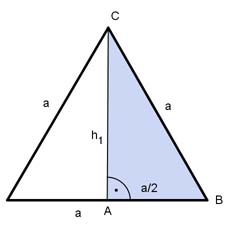

Aufgabe 51 Berechnen Sie das Volumen V eines Prismas mit einer Höhe h von 5 cm und einem gleichseitigen Dreieck mit einer Seitenlänge a von 4 cm als Grundfläche.  V = G * h a * h1 G = -------- 2 Satz von Pythagoras im Dreieck ABC: a² = (a/2)² + h1² |-(a/2)² h1² = a² - (a/2)² h1² = a² - a²/4 3 h1² = --- a² |√ 4 a 4 cm h1 = --- * √3 = ------- * √3 = 3,46 cm 2 2 4 cm * 3,46 cm G = ------------------ = 6,92 cm² 2 V = 6,92 cm² * 5 cm = 34,6 cm³